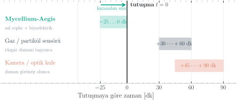

Her yangın, alev görünmeden önce yerin altında başlar.
Bugünün sistemleri dumanı bekler. Oysa tutuşmadan önce toprakta yayılan ısı cephesi, ağaçları birbirine bağlayan miselyum ağını çoktan uyarmıştır. Biz o ağı canlı bir sensöre dönüştürüyoruz — ormanın kendi sinir sistemini dinleyerek.


Bugünün sistemleri görüş hattına mahkûm.
Görüntü İşleme Yetersizliği
Yoğun örtü, vadi tabanı ve bulut altında kameralar işlevsiz kalır.
45–90 Dakika Kayıp
Gaz sensörleri rüzgârın dumanı taşımasını bekler, müdahale oldukça gecikir[1].
Ormana Bırakılan Çöp
Pil ve plastik tabanlı elektronikler hızla korozyona uğrayıp atıklaşır.

Trilyonlarca metrelik sensör ağı: Wood Wide Web
Biz yeni bir altyapı kurmuyoruz. Ağaçları birbirine bağlayan miselyum ağının, ısı şokunda ürettiği aksiyon potansiyellerini dinliyoruz.


Toprak altından buluta: mesh gateway mimari
Biyoelektrik sinyaller yüksek hassasiyetli ADC ile dijitalleştirilir ve mikrodenetleyici üzerinde ön işleme tabi tutulur. Veriler, orman örtüsünü aşabilen Sub-GHz LoRaWAN ağı ile merkez kuleye, oradan hücresel bağlantıyla buluta iletilir.

Saf gürültüden öznitelik çıkarımı
Doğal ortamdaki toprak empedansı ve nem dalgalanmaları sinyali kirletir. Ham DC gerilim üzerinden 5-tap FIR filtresi geçirilerek çevresel parazitler sönümlenir.
- DC offset kalibrasyonu (x̄₅₀)
- FFT ile frekans domeni
- Dominant frekans tespiti

Sensör füzyonu ile < %1 yanlış alarm
Çok Boyutlu Karar: AND-Gate & LSTM
Yanlış alarm, orman sistemlerinde operasyonel maliyeti yıkıcı derecede artırır. Tek bir voltaj eşiği kullanmak yerine; LSTM tabanlı zaman serisi tahmini ve mantıksal AND-gate füzyonu ile kesinlik (precision) maksimize edilir.
Alarm Koşulu = (dT/dt > β) ∧ (dR/dt > γ) ∧ (fspike ∈ [0,5–5] Hz)


Hipotezi laboratuvar ortamında doğruladık.


Şekil 11: İklim kabini termal şok testleri. Pleurotus ostreatus ağı üzerinde ESP32 ve yüksek çözünürlüklü ADC kullanılarak canlı veri elde edilmiştir.
Ticari bağımsızlık için 5 paket yeterli.

- Birim Paket Kâr Marjı: 200.000 TL
(360k satış fiyatı − 160k üretim/kurulum) - 18 Aylık Sabit Gider Planı: ≈ 880.000 TL
(AR-GE sarf malzeme, IP, bulut sunucu, kira) - Çekirdek Fon İhtiyacı: 1.350.000 TL
(TÜBİTAK 1812 BİGG desteği ile karşılanacaktır)
Sonuç: Piyasaya sürülen sadece ilk 5 referans paket satışı ile projemiz kârlılığa geçmekte ve dış yatırıma ihtiyaç duymadan kendini idame ettirebilmektedir.